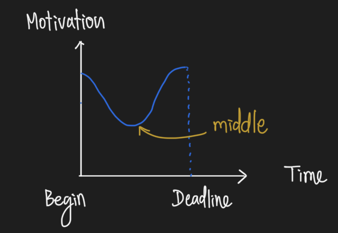
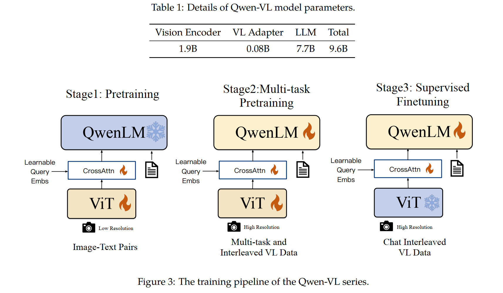
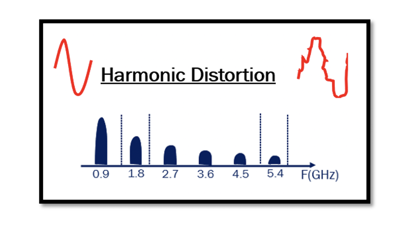

A Simple Journey
About
English
Chinese
Projects
Blog Posts
Categories
All
(20)
anaconda
(1)
deep learning
(3)
german
(2)
llm
(2)
lvlm
(1)
pip
(1)
quantization
(1)
web development
(1)

How to Set Right Goal and Stay Motivated
I recently watched a compelling TED talk by Ayelet Fishbach on the subject of motivation
How to Set Right Goal and Stay Motivated
. Here are some key takeaways and…
Aug 24, 2024
Samith Va
Quantization LLM
llm
quantization
Out of memory error (OOM) is the common problem in fine-tuning LLMs. To tackle with this problem, we use can use q-LoRA to fine tune the model. However, some of the LLMs are…
Aug 21, 2024
Samith Va
SeeClick
SeeClick
is a visual based GUI agent which is built on top of Qwen-VL-Chat. Using this agent, you can interact with the eletronics device in more efficient way, in other…
Aug 20, 2024
Samith Va
Pandas
Pandas is a powerful and versatile open-source data analysis and manipulation library for Python. It is widely used in data science, finance, economics, and many other…
Aug 1, 2024
Samith Va

QwenVL Paper Summary
llm
lvlm
Qwen-VL is a series of LVLMs which used to understand texts and images, it is developed by Ali group and it is an open-source model. What’s make it different from Qwen-7B is…
Jul 27, 2024
Samith Va
Power Amplifier
Two important specification of PA :
Jun 4, 2024
Samith Va
RF Mixers
Mixer is a very important component in modern RF, without it we may not be able to convert from low frequency (IF) into higher frequency (RF) or vice versa, and it will not…
Jun 4, 2024
Samith Va
RF Receiver
This post will include answers to these questions:
Jun 2, 2024
Samith Va
RF Noise
What will cover in this section : Noise Figure, Friis Equation, Thermal Noise of Resistor, MOSFET Noise.
Mar 29, 2024
Samith Va
RLC Circuit
Resistance is a property of a material or component in a circuit that opposes the flow of electric current. It’s essentially the friction or obstruction that electrons…
Mar 29, 2024
Samith Va
Regression and Classification
deep learning
Linear regression is a statistical method used to model the relationship between a dependent variable and one or more independent variables. It assumes that there is a
linear…
Mar 29, 2024
Samith Va
Anaconda or Pip
anaconda
pip
Conda is a versatile package and environment management system for Python and other programming languages. It simplifies the process of installing, updating, and managing…
Mar 28, 2024
Samith Va
HTML5
web development
HTML5 is the latest version of the Hypertext Markup Language (HTML), which is the standard language used to create and design web pages and applications. It is a significant…
Mar 28, 2024
Samith Va
German Grammar
german
The nominative case is one of the grammatical cases in German, used primarily for the subject of a sentence, which is the person or thing performing the action of the verb.…
Mar 28, 2024
Samith Va
Convolutional Neuron Network
deep learning
Keywords: Spatial dimension, Depth, Filters Bank, feature maps, Pooling
Mar 28, 2024
Samith Va
German Vocabulary
german
(die) Banane
Mar 25, 2024
Samith Va
OpenCV
OpenCV is an open-source computer vision and machine learning software library. It provides a wide range of functionalities for image and video processing.
Mar 23, 2024
Samith Va
Numpy
NumPy is the fundamental package for scientific computing in Python
Mar 22, 2024
Samith Va

Effects of Nonlinearity
In analog circuits, nonlinearity can be characterized by
harmonic distortion
, but in RF circuits, the characterization of nonlinear behavior involves distinct measures that…
Mar 21, 2024
Samith Va
Deep Learning Journey
deep learning
Keywords used in this context: architecture, overfit, fine-tunning, validation set, test set, weights, parameters, CNN
Mar 21, 2024
Samith Va
No matching items